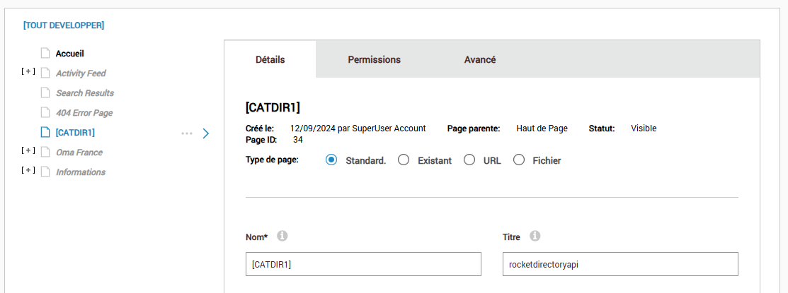

Menu and Meta Data Localization
Specify the NodeManipulator in the DDRMenu
In the skin all DDRMenu controls should specify the RocketTools node manipulator. This will alter the page names for localization and will also call any noe manpulator providers that have been specified in the page localization settings.
NodeManipulator="RocketTools.DdrMenuInterface,RocketTools"
<dnn:MENU MenuStyle="Mega2DNN" runat="server" NodeManipulator="RocketTools.DdrMenuInterface,RocketTools"
></dnn:MENU>
NOTE: The NodeManipulator with call providers that have been defined in the settings of the Page Localiztion tool.
var categoryData = (CategoryLimpet)Model.GetDataObject("categorydata");
Menu Manipulator for RocketDirectoryAPI and wrapper systems
The DDRMenu in DNN can have the the page element changed to add the catalog structure to the menu.
Create a Page with the name
[CATDIR{#}]
for the multiple directory systems the name must have an appendix.
example:
[CATDIR1] [CATDIR2]
Linking the page to a system - MANDATORY
Each category menu MUST be linked to a system. To link systems the systemkey is added to the page title.

Define a Root Category for the menu to start on - OPTIONAL
This is optional and if not defined the entire category will be displayed. If you need a menu to only show categories below a certain category then add the category REF value in the keywords input field.
Menu Manipulator for RocketEcommerceAPI and wrapper systems
The DDRMenu in DNN can have the the page element changed to add the catalog structure to the menu.
Create a Page with the name
[CATDIR]
Linking the page to a system - MANDATORY
Each category menu MUST be linked to a system. Add "rocketecommerceapi" to the page title.
Define a Root Category for the menu to start on - OPTIONAL
This is optional and if not defined the entire category will be displayed. If you need a menu to only show categories below a certain category then add the category REF value in the keywords input field.
Setup Meta data control
Register the Meta.ascx control in the skin, this will alter the page Meta data, Title, Tag Words and Description. It should be added after the default DNN "~/Admin/Skins/Meta.ascx" skin control.
<%@ Register TagPrefix="rocket" TagName="ROCKETTOOLSMETA" Src="~/DesktopModules/API/Meta.ascx" %>
<rocket:ROCKETTOOLSMETA runat="server" ID="ROCKETTOOLSMETA1" />
Setup BreadCrumb control (if required)**
The breadcrumb control is optional, if you don’t require a breadcrumb control this operation can be skipped.
<%@ Register TagPrefix="rocket" TagName="ROCKETTOOLSBC" Src="~/DesktopModules/API/BreadCrumb.ascx" %>
<rocket:ROCKETTOOLSBC runat="server" ID="ROCKETTOOLSBC1" />
Example: RocketW3 Skin